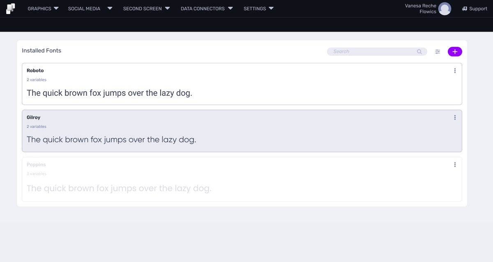
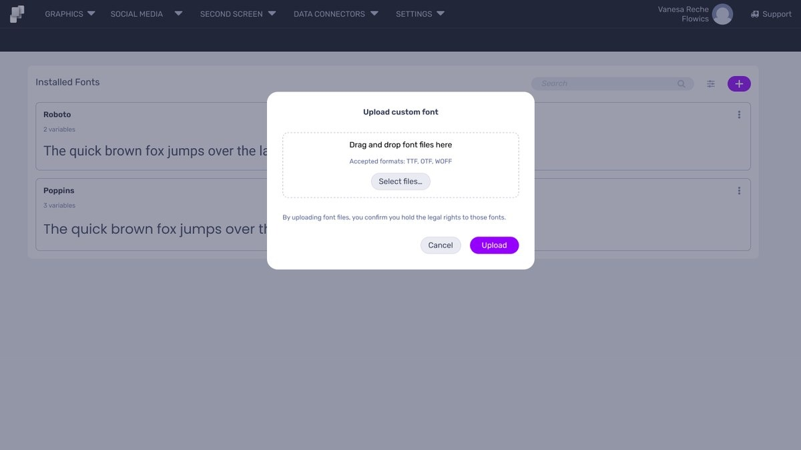
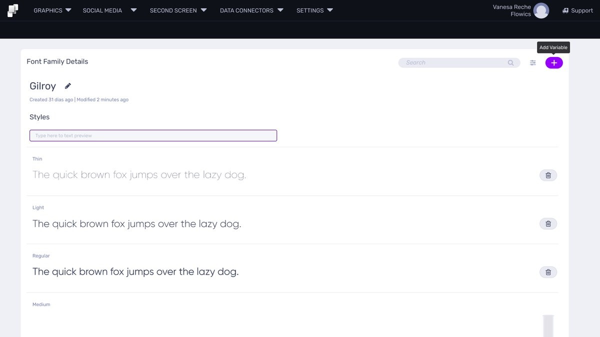
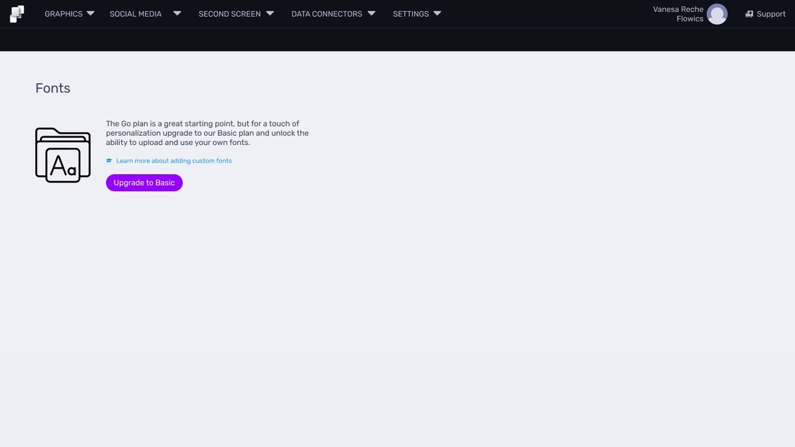

Viz Flowics (Vizrt) · Product Design · 2024
Custom Fonts
Diseño de la carga autónoma de tipografías propias en una plataforma SaaS B2B de gráficos en vivo: una tarea que dependía de un ticket a soporte pasó a resolverse en minutos, con gestión por familia y variantes, y disponibilidad según el plan contratado.
Funcionalidad visible en el free trial del producto, sin restricciones de confidencialidad.
Única diseñadora
del proyecto
Lideré el diseño de punta a punta, desde la definición del flujo hasta el handoff a desarrollo, en coordinación con producto e ingeniería. La funcionalidad forma parte de la estrategia self-serve de Viz Flowics y se validó con usuarios antes del lanzamiento.
0
tickets necesarios para incorporar una tipografía propia
5
usuarios en las pruebas de usabilidad previas al lanzamiento
3
formatos aceptados: TTF, OTF y WOFF
Basic
plan desde el que se habilita la funcionalidad

01
Contexto
Cargar una tipografía propia requería un ticket a soporte
Las productoras trabajan con la identidad visual de cada canal o programa, por lo que contar con sus propias tipografías es un requisito habitual. Sin embargo, incorporar una fuente al producto implicaba solicitarla al equipo de soporte, que cargaba el archivo manualmente del lado del servidor.
La fricción: un proceso lento, que no escalaba y dependía por completo de la disponibilidad interna; precisamente el tipo de tarea que el modelo self-serve de la plataforma buscaba eliminar.
02
Carga
Una carga directa, sin intermediarios
Diseñé un flujo de carga mediante arrastrar y soltar, con selección manual como alternativa. El modal explicita los formatos aceptados y solicita confirmar los derechos de uso de las fuentes, una consideración legal que antes resolvía el equipo de soporte.

Modal de carga: arrastrar y soltar, formatos aceptados y confirmación de derechos de uso.
03
Gestión por familia
Las fuentes organizadas como las piensa un diseñador
El sistema agrupa automáticamente los archivos por familia tipográfica y variante (peso y estilo). Desde el panel se identifica cada familia con una muestra de texto y la cantidad de variantes disponibles; desde el detalle, es posible renombrarla, incorporar o eliminar variantes y previsualizar cualquier texto en todos los estilos.

Detalle de familia: variantes por peso, vista previa editable y acciones por variante.
04
Feature gating
La limitación del plan como oportunidad de upgrade
La funcionalidad se habilita a partir del plan Basic, siguiendo el sistema de feature gating definido para el modelo self-serve. En el plan Go, en lugar de ocultar la sección, la interfaz explica el beneficio de personalizar la tipografía, enlaza a la documentación y ofrece el upgrade en el mismo contexto.

Estado para el plan Go: valor de la funcionalidad, documentación y upgrade contextual.
05
Validación e impacto
De tarea de soporte a funcionalidad de valor comercial
Antes del lanzamiento, evalué el flujo completo en pruebas de usabilidad con 5 usuarios, con foco en la comprensión de la carga, la agrupación automática por familia y el mensaje de upgrade.
↓
Reducción de los tickets de soporte vinculados a la carga de tipografías, que pasó a resolverse de forma autónoma.
↑
Upgrades al plan Basic motivados por la posibilidad de utilizar tipografías propias.
La funcionalidad cumplió un doble objetivo: liberó al equipo de soporte de una tarea recurrente y se convirtió en un argumento concreto de upgrade dentro del modelo self-serve.
06
Rol y criterios
Rol y criterios de diseño
Como única diseñadora del proyecto, fui responsable de la definición del flujo, el diseño de interfaz, las pruebas con usuarios y el handoff a desarrollo.
- Autonomía como principio. Eliminar intermediarios en tareas que el usuario puede resolver por su cuenta.
- Modelos mentales del usuario. Organizar las fuentes por familia y variante, como se gestionan en cualquier herramienta de diseño.
- Gating con contexto. Explicar el valor de la funcionalidad en lugar de ocultarla a los planes que no la incluyen.
- Consistencia de sistema. Reutilizar los patrones de feature gating del modelo self-serve para una experiencia coherente.
En retrospectiva: instrumentaría desde el lanzamiento la medición de upgrades atribuibles a esta funcionalidad, para cuantificar su impacto comercial con precisión. También incorporaría una validación automática de los archivos al momento de la carga, con feedback inmediato ante formatos o variantes duplicadas.